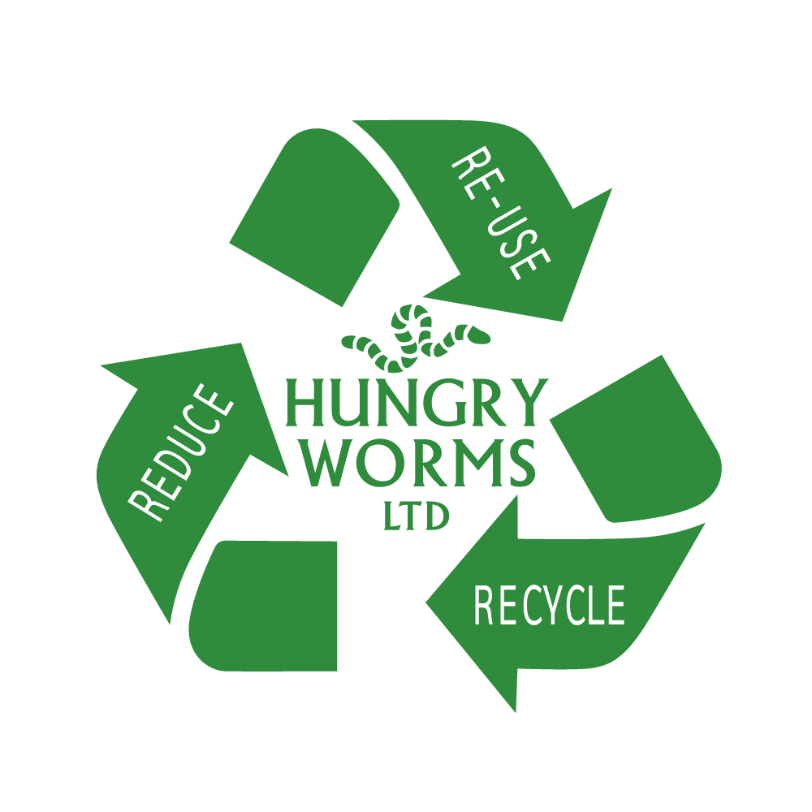
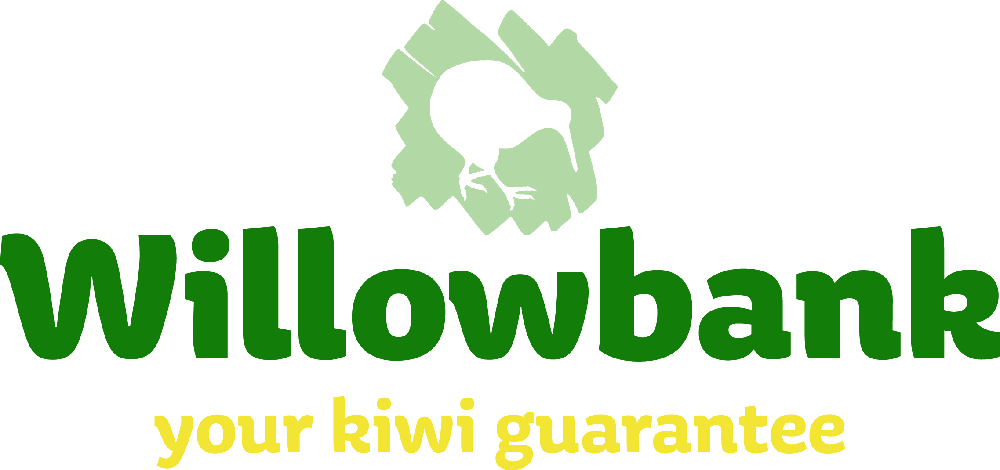
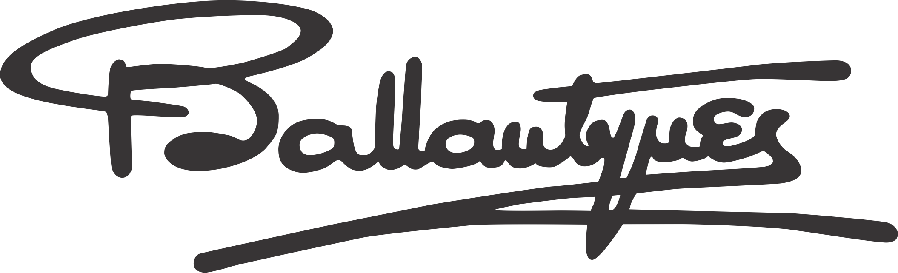
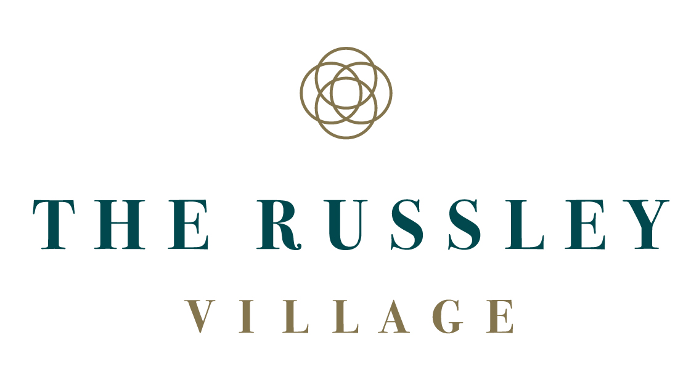
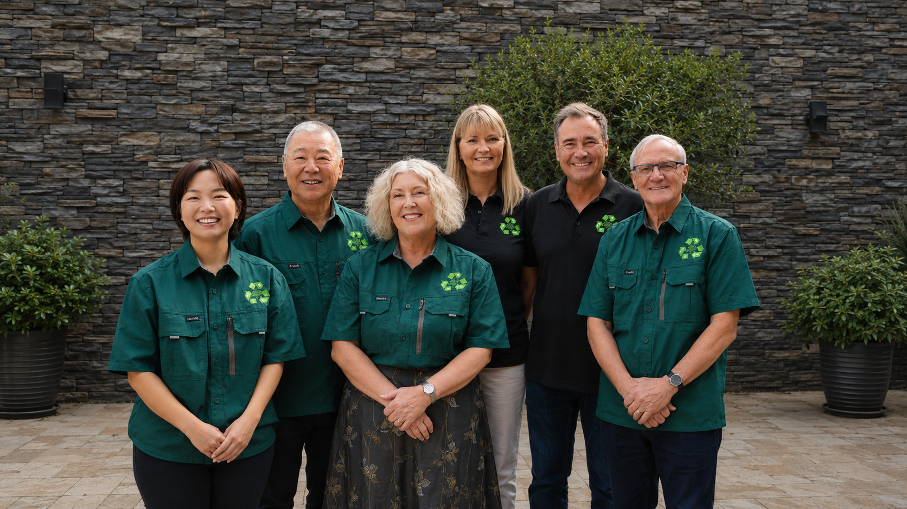

One dot each, since we started keeping records in March 2023.
Here’s what Canterbury did with us.

Swipe →One block = one tonne.
Every kilogram weighed on collection and logged in our Master Log. Totals since we started keeping records, March 2023.
Same block, same scale — 2.5× as many.
More than 2.5 kg CO₂e per kg of food waste sent to landfill — UN FAO (2013). Totals since we started keeping records, March 2023.
180,964 kg CO₂e ÷ 4,600 kg, the annual emissions we count for one average car. Totals since we started keeping records, March 2023.
CO₂e = weight × 2.5 (UN FAO 2013) · Cars = CO₂e ÷ 4,600 kg · Master Log, kept since March 2023.
Proud to be part of these six Canterbury organisations’ sustainability journey.



Seven Canterbury sites · 379 collection days.
1,488 pickups on record since March 2023. The next one is yours.
Try us for a month, with no long-term commitment. Then carry on, or wind it up — your call.
hungryworms.nz
Mark and Juline started Hungry Worms in 2021.
Everyone here came for the same reason.
Be part of the solution, not the pollution.